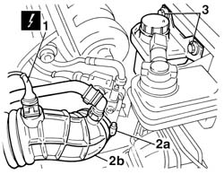
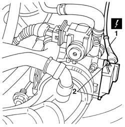

1056B40 throttle case throttle position switch - r + r
- Path
- Procedures > 10 ENGINE > 1056 PETROL INJECTION SYSTEM > 1056B multi-point injection system (mpi) > 1056B40 throttle case throttle position switch - r + r
- Kind
- repair procedure (removal / refitting; the operation number is the code)
- Applies to
- engines: 1.6 TS ; all production periods
- Interactive page
- https://sloeber94.github.io/elrnDB-a156/en/#/3237683
Applies to: engines: 1.6 TS ; all production periods
 Removing
Removing
 Refitting
RefittingDisconnect the battery negative terminal.
 | Name | Connector |
|---|---|---|
- | Battery |
1. Disconnect the electrical connection from the intake air temperature sensor.
| Name | Connector |
|---|---|---|
1 | Air temperature sensor |
2. Loosen collar (2a), withdraw air sleeve (2b) from the throttle body and move to one side.
3. Unscrew both power steering fluid reservoir bolts and move to one side.

Applies to: engines: 1.6 TS ; all production periods
1. Disconnect the connection from the throttle valve position switch.
| Name | Connector |
|---|---|---|
1 | Throttle position sensor |
2. Unscrew both retaining bolts and remove the throttle valve position switch.

Applies to: engines: 1.6 TS ; all production periods
Refitting
RemovingPosition the throttle valve position switch and tighten both retaining bolts.
Connect the throttle valve switch connection.
Reposition the power steering fluid reservoir and secure with both bolts.
Fit the air sleeve to the throttle body and tighten the collar.
Reconnect the intake air temperature sensor connection.
Disconnect the battery negative terminal.